Rolinha
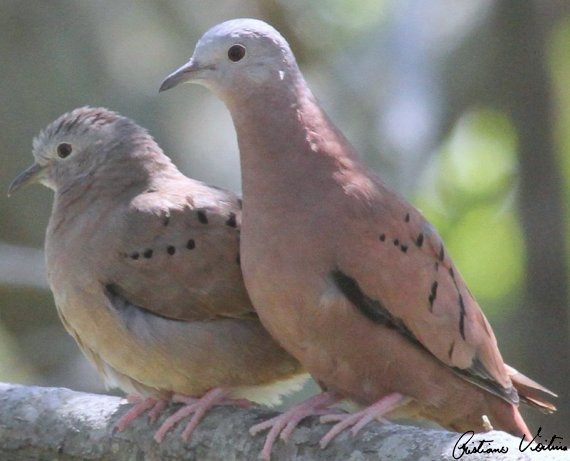
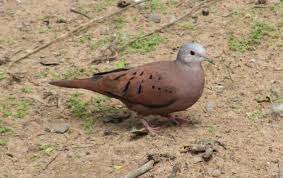
 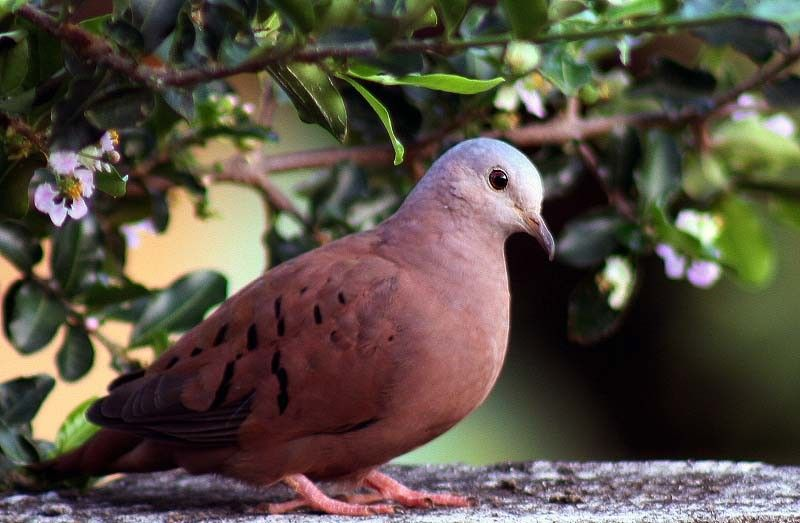
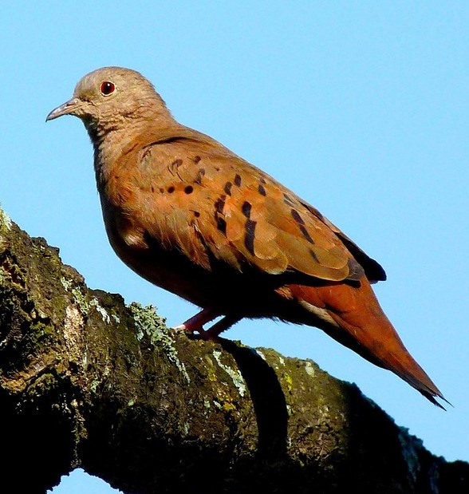
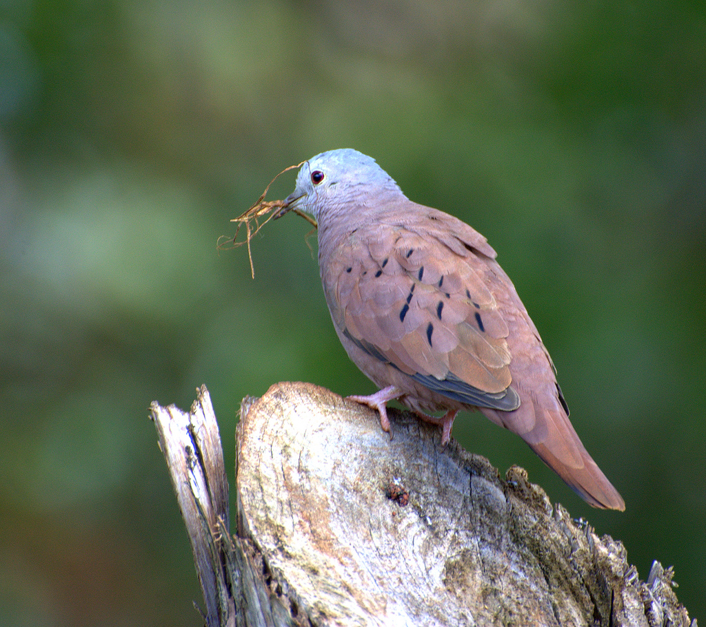
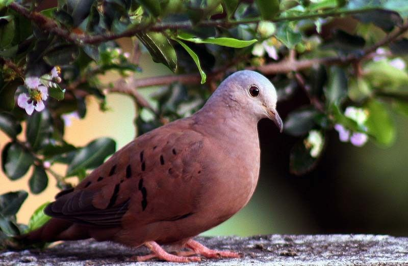
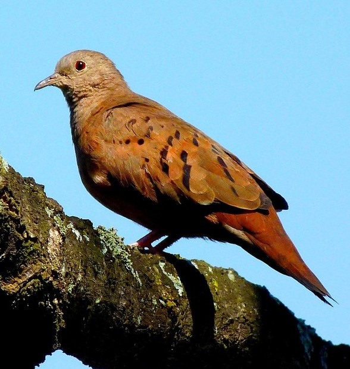
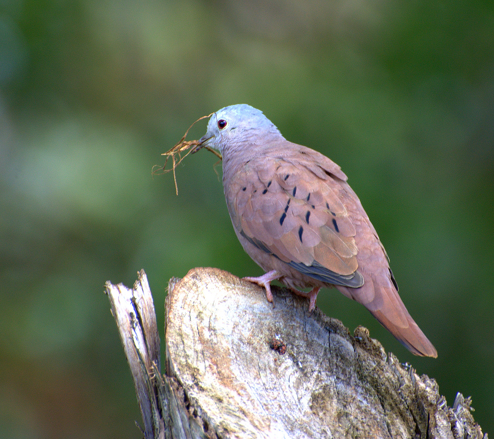
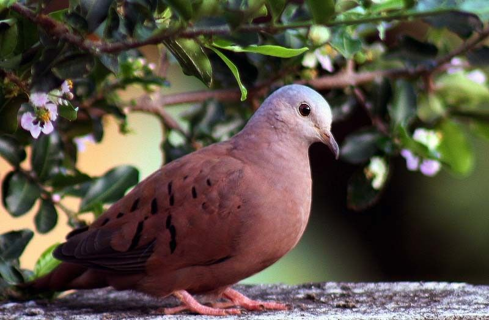
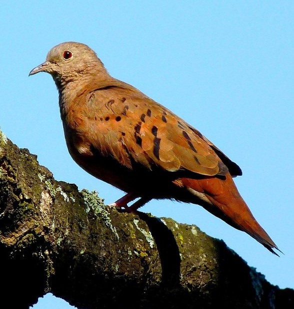
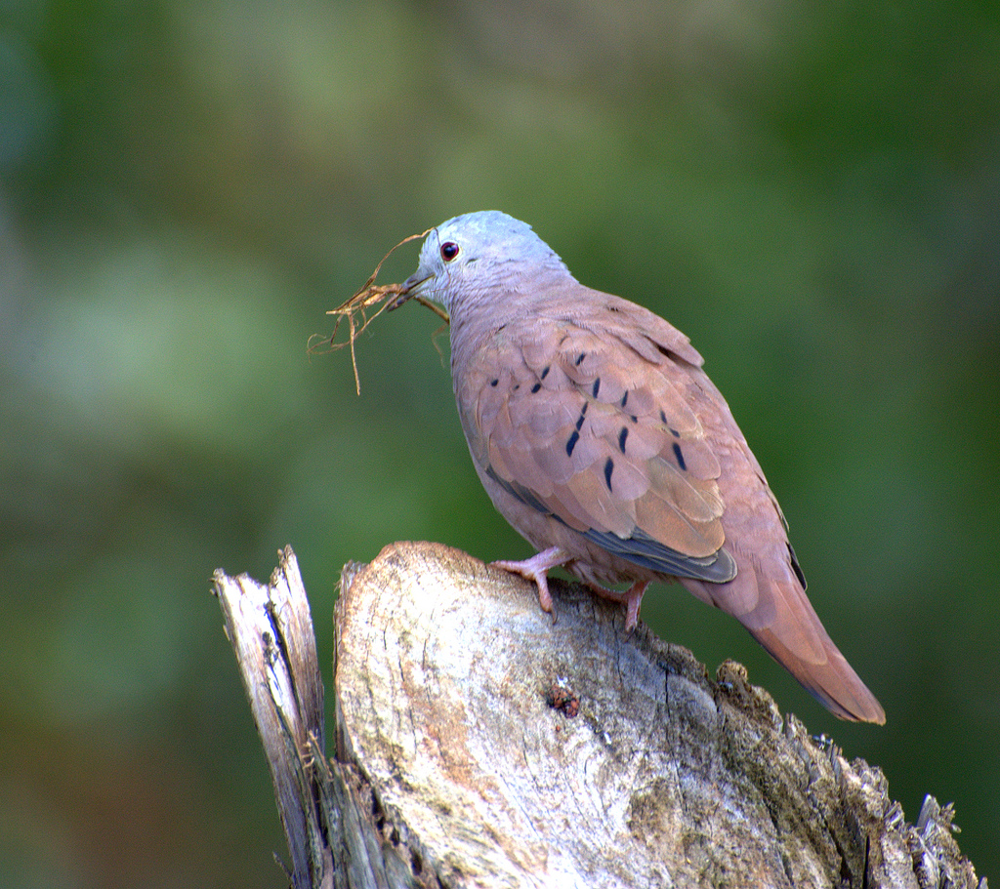
INFORMAÇÕES SOBRE O ANIMAL
- Nome Científico: Columbina talpacoti
(Temminck, 1810) - Nomes Populares: Conhecida também como caldo-de-feijão, (rola)rolinha-caldo-de-feijão (PB), picuí-peão, rola, pomba-rola, rola-cabocla (CE), rola-grande, rola-roxa, rola-sangue-de-boi (PE e BA), rolinha, rolinha-comum, rolinha-vermelha, rolinha-juruti e pomba-café.
- Atualmente a espécie não está em perigo de extinção.
Classificação Biológica
- Dominio: Eukaryota
- Reino: Animalia
- Filo: Chordata
- Classe Aves
- Ordem: Columbiformes
- Família: Columbidae
- Espécie: C. talpacoti
Nutrição Geral
- Tipo de Nutrição: Heterotrófico.
- Herbívora, mais especificamente granívora e frugívora, alimentando-se de grãos, sementes, frutas e vegetais.
Morfologia
- Medem 17 centímetros de comprimento e pesam 47 gramas. O macho, com penas marrom avermelhadas, cor dominante no corpo do adulto, em contraste com a cabeça, cinza azulada. A fêmea é toda parda. Nos dois sexos, sobre a asa há uma série de pontos negros nas penas. Os Filhotes saem com traços da plumagem de cada sexo.
Comportamento
- Adapta-se aos ambientes artificiais criados pela ação humana. Vive em áreas abertas; o desmatamento facilitou sua expansão, em especial nas áreas formadas para pasto ou agricultura de grãos. Entrou nas grandes cidades das regiões sudeste e centro-oeste do Brasil; facilmente encontrada no bairro de Copacabana, no Rio de Janeiro. Muito agressivas entre si, embora possam formar grupos, disputam alimentos e defendem territórios usando uma das asas para dar forte pancadas no oponente. Os machos são mais belicosos. Nas disputas ou quando tomam sol, deitadas de lado no chão e com a asa esticada para cima, mostram a grande área de penas negras sob a asa. Observadores de pássaros do centro-sul de nosso país vêm observando uma “substituição” desta espécie por outra pombinha, a Zenaida auriculata, também conhecida como pomba-de-bando, amargosinha ou avoante. Esta última espécie vem conquistando o ambiente urbano cada vez mais efetivamente e está aparentemente competindo com a rolinha-roxa, que já é menos frequente que a pomba-de-bando na maioria das cidades do interior de São Paulo. Seja como for, esta espécie simpática e até mesmo ingênua está longe de desaparecer dos quintais de nossas casas e das praças e jardins de nossas cidades, mesmo que estes estejam em grandes prédios.
- Predadores: A espécies possui muitos predadores em potencial e por estar sempre em áreas abertas é facilmente capturada. Dentre os predadores destacam-se outras aves, tais como o caburé, o falcão-de-coleira, o quiriquiri, além de répteis como o teiú e, felinos como o gato doméstico.
Ocorrência
- Habitat: Paisagens abertas, brejos e quintais, explorando telhados de casas e edifícios e adaptando-se aos grandes centros urbanos.
- Distribuição: ocorre do México à Bolívia, Paraguai, Argentina e Brasil.
- Mapa de Ocorrência
Reprodução
- A reprodução pode ocorrer durante o ano inteiro desde haja alimento suficiente. O casal é territorialista, afastando as outras rolinhas do ninho o qual é uma pequena tigela de ramos e gravetos localizada entre cipós ou galhos.